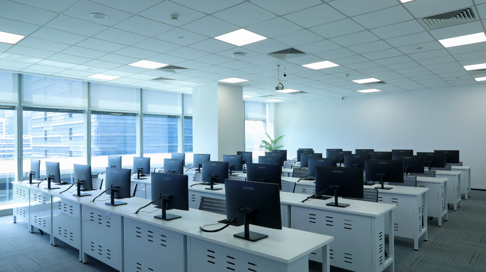
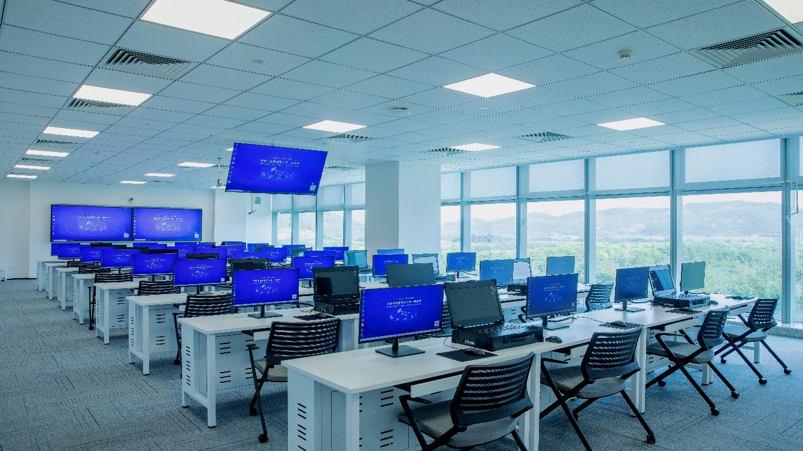
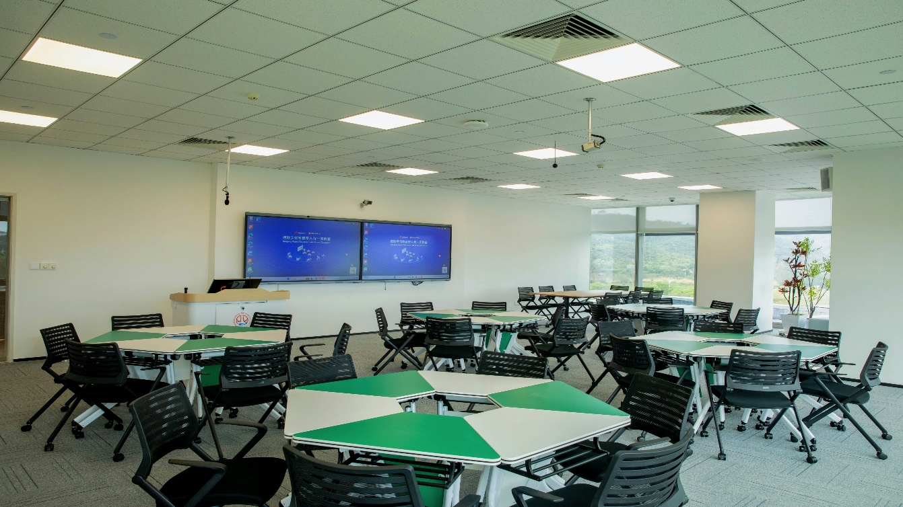
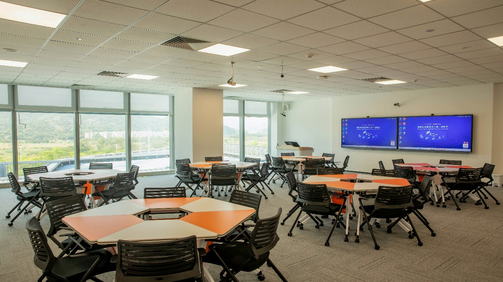
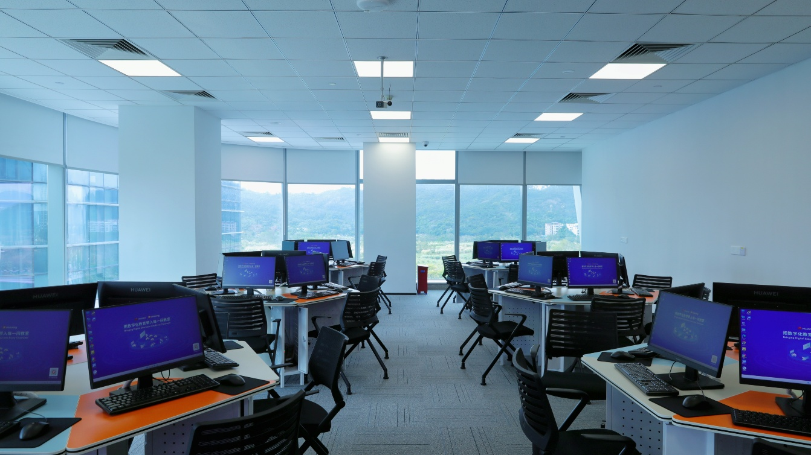
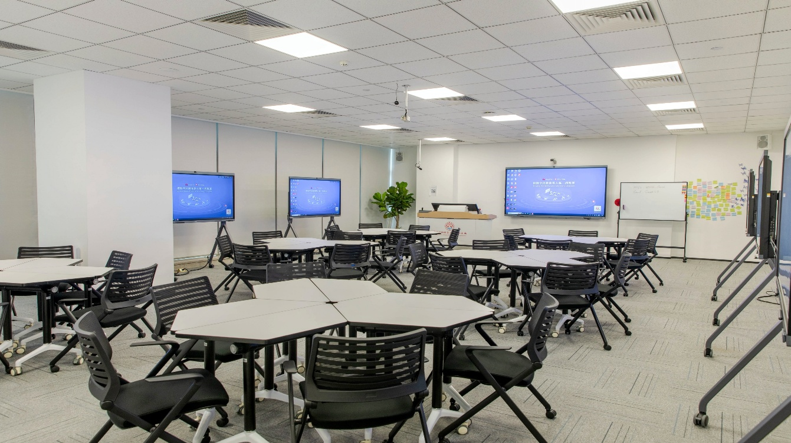
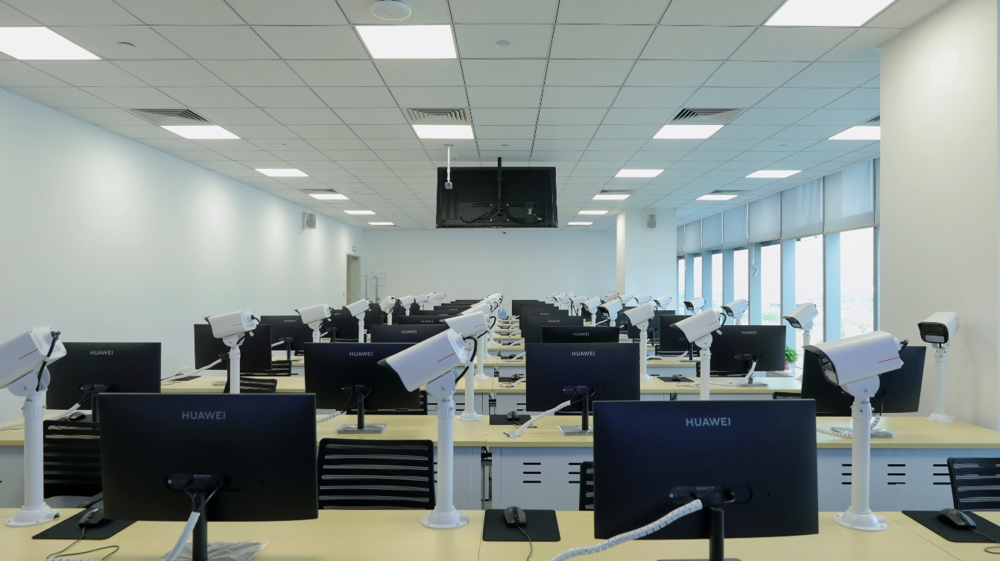
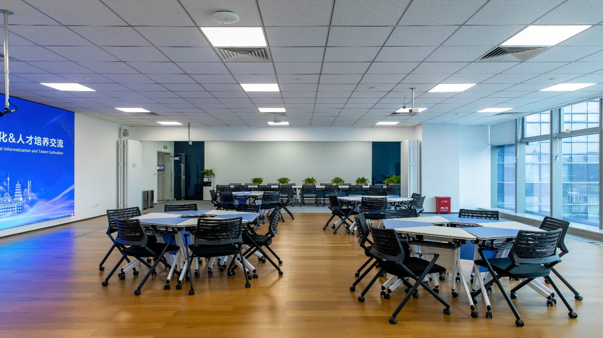

0302
华为认证实训室
配备互动式大屏、分组讨论区、远程协作设备及学生电脑，为华为认证教学提供专业的实训环境。
软件平台：uLMS、uClass、uAgent、uCapture、AI课堂分析、华为人才培养平台。
应用场景：华为职业认证教学、PBL教学、课堂互动、实验实操、课堂视频录制与分析。
TRAINING SPACES
0302
配备互动式大屏、分组讨论区、远程协作设备及学生电脑，为华为认证教学提供专业的实训环境。
软件平台：uLMS、uClass、uAgent、uCapture、AI课堂分析、华为人才培养平台。
应用场景：华为职业认证教学、PBL教学、课堂互动、实验实操、课堂视频录制与分析。

0304
配备智慧黑板、云存储、音视频设备、智慧中控、网络交换机、学生电脑及实训箱。
软件平台：uLMS、uClass、uAgent、uCapture、AI课堂分析、华为人才培养平台。
应用场景：PBL教学、课堂互动、课堂视频录制与分析、5G Star教学。

0306
配备智慧黑板、云存储、音视频设备、智慧中控、网络交换机、学生电脑及华为DataCom Star数据通信实训套件。
软件平台：uLMS、uClass、uAgent、uCapture、AI课堂分析、华为人才培养平台。
应用场景：PBL教学、课堂互动、课堂视频录制与分析、DataCom Star教学。

0307
配备智慧黑板、云存储、音视频设备、智慧中控、网络交换机以及绿白拼色组合桌椅。
软件平台：uLMS、uClass、uAgent、uCapture、AI课堂分析。
应用场景：PBL教学、课堂互动教学、课堂视频录制与分析。

0308
配备智慧黑板、云存储、音视频设备、智慧中控、网络交换机及橙白拼色组合桌椅。
软件平台：uLMS、uClass、uAgent、uCapture、AI课堂分析。
应用场景：大屏与平板协同互动教学、课堂视频录制与分析、远程互动教学。

0401
配备智慧黑板、云存储、音视频设备、智慧中控、网络交换机、学生电脑及三色实训桌椅。
软件平台：uLMS、uClass、uAgent、uCapture、AI课堂分析。
应用场景：K–12人工智能通识实验、基于PC的课堂互动教学、课堂视频录制与分析。

0402
配备智慧黑板、云存储、音视频设备、智慧中控、网络交换机，并支持选配华为平板。
软件平台：uLMS、uClass、uAgent、uCapture、AI课堂分析。
应用场景：小组研讨、PBL教学、基于BYOD的课堂互动、课堂视频录制与分析。

0404
配备智慧黑板、云存储、音视频设备、智慧中控、学生电脑、华为AI实训套件及机器视觉智能边缘终端。
软件平台：uLMS、uClass、uAgent、uCapture、AI课堂分析、华为人才培养平台。
应用场景：PBL教学、课堂互动、课堂视频录制与分析、AI教学实践。

0408
配备智慧黑板、云存储、音视频设备、智慧中控、网络交换机及可灵活组合的多类型桌椅。
软件平台：uLMS、uClass、uAgent、uCapture、AI课堂分析。
应用场景：自主学习、本地与远程培训、培训视频录制、小组研讨、PBL教学和课堂互动教学。

0301
配备大屏，可用于项目路演、成果展示、主题分享、小型发布与交流活动。

0303
配备咖啡机、煮水壶、微波炉、制冰机和冰箱等设备，为培训、研讨与交流活动提供休息配套空间。